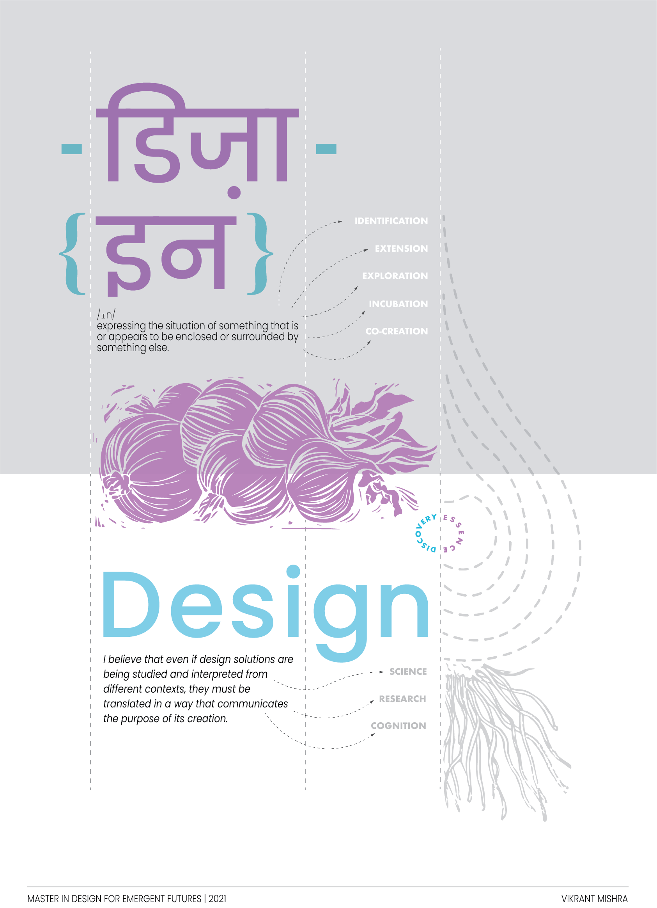

Photograph clicked at Museu del Disseny de, Barcelona
TERM I
Bootcamp
“I love fools’ experiments. I am always making them.”
- Charles Darwin.
The first word that comes in anybody’s head after reading Charles Darwin’s name is ‘Evolution’. As much as many academics in current practice refrain from accepting the legitimacy of his work, nobody can deny the role it played in being an agent of change across generations of biologists. The theory of Natural Selection predicted a paradigm shift away from evolution to an alternative explanation from what was known. According to this theory, evolution apparently occurs because of something called ‘Natural Selection’. This implied that organisms in nature tend to survive based on their physical adaptability, rates of reproduction and maturity. As much as this tends to make sense, there were new theories that argued with the same yet again. One of classical objections to natural selection was “dilution” which explained that new variations of a genome would be lost as the organisms possessing them bred with others. These theories played a vital role in the advancement of the human race by accelerating evolution by adding ‘Synthetic Evolution’ to the list. It is the application of modern molecular and synthetic biology approaches to iteratively diversify targeted organisms with desired functions or phenotypes. This advancement was only made possible due to the constant experimentation across multiple agents and environments. Goes without saying that this process is very similar and coherent to the process of Designing in the 2020 context. Designing is and should be a constant process of engaging and involving agents around our everyday lives just like Synthetic Evolution. These agents of change can be daily practices, cultures we consume and the cities we live in. Out of these agents the most important one is ‘xarxa’, the people around us that we connect with and the network we build. In a course that focuses on Designing for Emergent Futures, the biggest mistake a designer could make is limiting themselves to a single perspective. Limiting to a single perspective only leads to cultural isolation, and dissociation within a team of multiple agents and collaborators. When designing for a cause, 1PP threatens the health and adaptability of a Design solution. These solutions tend to fail or grow out of an ecosystem much faster than a frugal one. This learning is very similar to the one that explains how misinformation is a bigger enemy than lack of information. The act of familiarizing oneself can be a boon for one to design better.
This process of familiarization began with the tour of PobleNou District. It was extremely fascinating to witness these interdisciplinary connections journey through each other in such a harmonious way. The neighbourhood is a good example of a healthy and symbiotic ecosystem. The tour helped in building my own trajectory towards being a conscious and responsible futurist. Through the past week, the exposure to classmates from various cultural and socio-political backgrounds has pulled me out of a cultural isolation. It has inspired and helped me in understanding and strengthening my positionality in the bigger design ecosystem. This team of agents is going to help me in learning, unlearning and designing better for one of the possible futures that I’ll be commencing on the journey for.
What's my fight?

My journey as a designer started at a very early age due to my fascination with biology diagrams in school. I used to practice these over and over again to imbibe them to my visual memory. This taught me something very primal and integral at a very young age - the ritual of practice. Science, and especially Biology was my trigger to pursue arts and design academically. I moved to Southern India, from my home in the west, 1500 kms away, to expand my learnings further. While I was majoring in Industrial Design, I got a chance to explore and challenge the pre-constructed paradigms of design studies. We as students were told that a design solution is supposed to fit in a category or a ‘department’ and one day suddenly I was graded a C for a project that didn’t fit the ‘niche’ or the ‘evaluation criteria’ as per my major. As revolting as it was, it then dawned upon me that the future of design bleeds into all sections of study and disciplines, no matter the distinction it’s been boxed into. In Fact you can never actually box a plant and then expect growth. As a child I used to help my father maintain our garden, whether it was sowing or pruning. And what that has taught me is the intrinsic importance of maintaining harmony within the various elements of nature. I use it as a guiding principle in my life even today. A harmonious and well-balanced garden attracts more life and even more bounty. But the exploitation of such an ecosystem only attracts complex problems like the ones that this world is facing currently. The issues like Climate Change, Food waste, and Water insecurity are some of these complex problems that I feel need urgent attention and outreach. Amidst all of these experiences and bits of life, getting the opportunity to travel within the lengths and breadths of my country, is one of the biggest privileges I’m grateful for. Traversing through various terrains and engaging with communities, I have realized the importance of something that ties people and diversity together. Food. This deep interest inspired me to base both of my Bachelor’s thesis interventions around food and social innovation. While one project worked with a geographically specific context, based in North-eastern India around borders of Nepal, the other project took the mundane activity of eating at a canteen and studied communal consumption behaviors. The practice of designing and co-creating with these communities has imbibed a sense of purpose in my work. They have taught me a lot about the social constructs, heritage, cultural practices, and ingenious materials of my country. And now I'm looking forward to exploring the same, here in Barcelona. The practice of designing and co-creating, by using food as a tool and a medium, to cross paths between design and technology, to bridge social constructs and exploring the human psyche. To solve intricate problems like food wastage, food safety, accessibility and food waste management. Just like extracting the essence of the ingredients in a dish, When I design, I want to focus on the essence of the solution. I believe that even if design solutions are being studied and interpreted from different contexts, they must be translated in a way that communicates the purpose of its creation. ‘Food and consumption behaviours’ is a lens that I’m really looking forward to exploring while exploring my way through MDEF. As the legend says, ‘Thy shalt be on a seafood diet. Thou shalt see food and then eat it.’